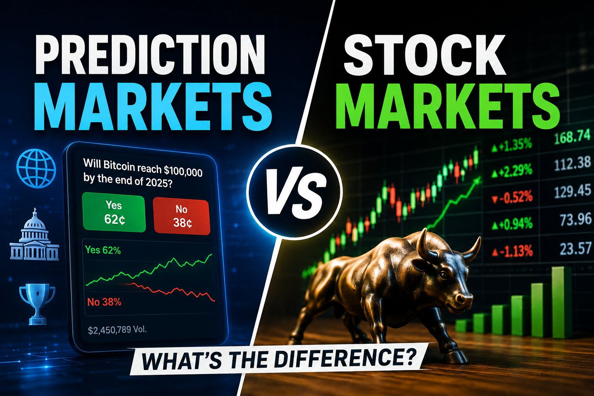

Prediction Markets vs Stock Markets: What's Actually Different in 2026?

The short answer
They're not really competitors — they're pricing different things. A stock is a claim on a company's future cash flows, held indefinitely, with no built-in resolution date. A prediction market contract is a bet on one specific, verifiable fact about the future — will the Fed cut rates in July, will a named event happen by a set date — that resolves to a fixed payout and then simply ends. Stocks are still, by a huge margin, the bigger asset class: the global equity market is valued north of $100 trillion, against a prediction-market sector that grew from roughly $1 billion in monthly volume in June 2024 to about $24 billion by April 2026. But the growth curve, the regulatory posture, and who tends to actually make money look very different on each side.
What each one is actually pricing
When you buy a share of a company, you're underwriting a long, open-ended story — management execution, competitive position, macro conditions, all playing out over years. When you buy a "Yes" contract on a prediction market, you're pricing a single discrete question with a known resolution date and a binary or scalar payout. There's no clean prediction-market equivalent of "I think this company will compound value for a decade," and there's no clean equity equivalent of "will CPI print above 3.2% in September." That structural gap — one prices ongoing value creation, the other prices discrete outcomes — is the main reason they don't really substitute for each other so much as sit next to each other.
Size: still no contest, but the gap is closing fast
By notional value, stock markets remain vastly larger. The NYSE alone processes trillions of dollars in trades annually, and the entire prediction-market sector — even after a breakout year — is still a small fraction of the roughly $31 trillion notional futures market the CFTC already regulates. But the growth rate is the story: total contracts listed on U.S. prediction markets went from an average of about five per year between 2006 and 2020 to more than 1,600 certified in 2025 alone, and total trading volume across CFTC-registered platforms topped $25 billion that same year. One 2025 industry forecast projects the sector could reach roughly $95.5 billion by 2035 at a 46.8% compound annual growth rate. That's venture-style growth layered on top of what's still a rounding error next to equities.
Regulation: two very different regimes, and one is still being written
Stocks trade inside a century-old framework overseen by the Securities and Exchange Commission, with settled rules on disclosure, insider trading, and market structure. Prediction markets are still being defined in real time. The Commodity Futures Trading Commission only designated its first prediction market as a regulated exchange in 2004, and as recently as March 2026 it issued fresh staff guidance (CFTC Letter No. 26-08) on how existing derivatives rules apply to event contracts. In June 2026 the CFTC went further, proposing the first comprehensive federal rulemaking for the category — a three-step framework for deciding which event contracts can be listed, with a comment period running into the fall. Meanwhile the agency has also sued several states that tried to regulate sports-related event contracts under their own gambling laws, arguing federal law preempts them. None of that ambiguity exists in equities anymore; it's very much alive in prediction markets.
Who actually wins, historically speaking
Neither market is as friendly to the average participant as it looks from the outside. In stocks, active managers and individual stock-pickers underperform a simple index fund the large majority of the time over ten-year periods, according to S&P Global's SPIVA scorecards, and separate research from DALBAR has repeatedly found that the average equity investor trails the S&P 500 by several percentage points a year, largely due to poorly timed buying and selling. Prediction markets show an even starker concentration of outcomes: a 2026 academic study on Polymarket found the top 1% of accounts captured nearly 77% of all trading gains, with profits flowing mostly to sophisticated traders using limit orders rather than casual participants chasing headlines. In both markets, the house edge isn't a fee — it's information and discipline, and most retail participants have less of both than they think.
Time horizon and how each one pays out
A stock position can be held for decades and never forces a decision — you choose when to sell. A prediction market contract has a hard expiration built in: it resolves to its final value on a fixed date and the position closes whether you're ready or not. That makes prediction markets structurally closer to options or short-dated futures than to equities, and it's part of why platforms report much faster position turnover than typical stock portfolios. It also means prediction markets can't really be used for long-term compounding in the way stocks can — they're built for pricing a specific near-term question, not for storing value over years.
Where the two are starting to overlap
The interesting edge is where they blur together. Some CFTC-regulated platforms now list event contracts tied directly to individual companies — for example, whether a firm will report production or earnings above a specific threshold in a given quarter — which sit right at the intersection of equity analysis and event-contract trading. In the other direction, professional investors increasingly treat prediction-market pricing on things like Fed decisions or inflation prints as a real-time data feed that informs how they position in equities and rates, even if they never place a trade on the prediction platform itself. Neither market is replacing the other; the boundary between "priced event" and "priced company" is just getting less clean than it used to be.
So which one should you actually care about?
If your view is about a company's long-term trajectory, that's an equity question, full stop — there's no prediction-market contract that expresses "this business will be worth more in ten years." If your view is about a single, verifiable, near-term event — a rate decision, an economic print, an election outcome — a prediction market prices that more directly than trying to infer it through a stock position. Stocks remain the dominant, deeper, more established market by a wide margin, and that isn't changing soon. Prediction markets are the newer, faster-growing, still-being-regulated category that's carving out a lane for the kinds of bets equities were never built to price.
Disclaimer: This post is for informational purposes only and is not financial, legal, or investment advice. Prediction market regulation is actively changing at the federal and state level as of mid-2026 — always check current rules at cftc.gov and current disclosure requirements at sec.gov before making decisions based on this article.